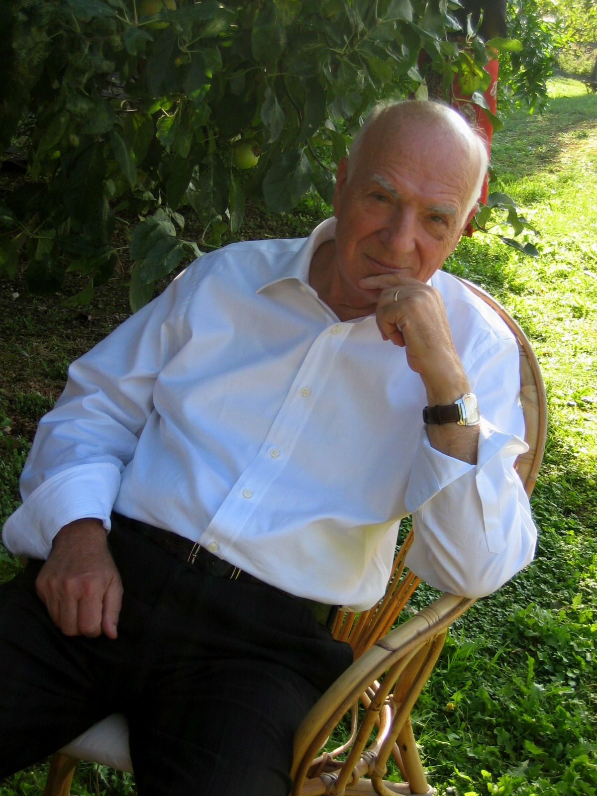
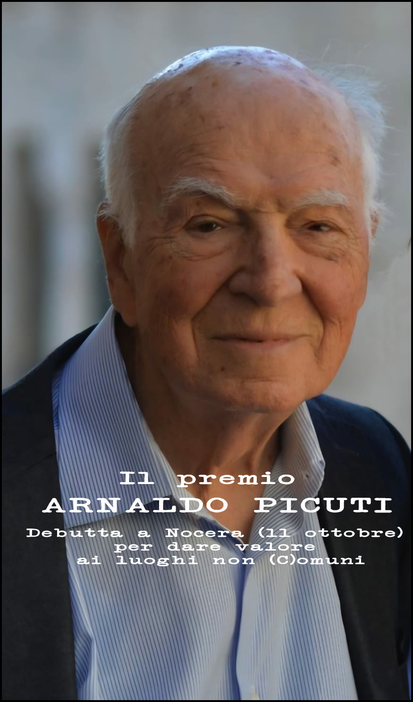

Rassegna stampa
Articoli, servizi, interviste e comunicati dedicati al Premio e alle diverse edizioni.
Dare valore ai luoghi non comuni.

Avvocato, pubblicista e scrittore, Arnaldo Picuti ha legato la propria vita alla cultura, alla storia e ai territori dell'Umbria.
Nato a Bevagna il 21 maggio 1934 e scomparso a Foligno il 24 gennaio 2022, trascorse l'infanzia e la prima giovinezza tra Bevagna, Foligno e Nocera Umbra. Visse a Foligno, dove esercitò intensamente la professione forense insieme al fratello Ariodante e al nipote Giovanni.
Fece parte dell'Accademia Fulginia e fu ispiratore di quella di Bevagna. Fu inoltre membro dell'Associazione-editore Orfini Numeister di Foligno e tra i fondatori, con Giovanni Carnevali, dell'Editrice Ediclio.
Le sue passioni più profonde furono la storia, la letteratura e il giornalismo. Giovanissimo collaborò alle pagine regionali di quotidiani nazionali; in seguito scrisse per il settimanale umbro Centro Italia e per le pagine umbre de Il Tempo e Il Giornale d'Italia.
Lettore e studioso instancabile, unì cultura giuridica, curiosità intellettuale e una profonda attenzione alla storia dell'Umbria, con particolare riguardo a Bevagna, Nocera Umbra e Foligno.
Il Premio nasce per raccogliere questa eredità culturale e continuare a interrogare la storia, i territori e le comunità come strumenti di identità e di futuro.
Una produzione attraversata dalla storia locale, dalla ricerca documentaria e dall'attenzione per l'identità umbra.
Il Premio Arnaldo Picuti nasce a Nocera Umbra per custodire e rilanciare un modo di leggere il territorio attraverso cultura, storia e divulgazione.
Istituito dalla famiglia Picuti, il Premio ha avuto fin dalla prima edizione il patrocinio del Comune di Nocera Umbra e della sezione regionale umbra dell'associazione “I Borghi più belli”.
L'iniziativa intende restituire la complessità della figura di Arnaldo Picuti: avvocato, autore, editore e animatore culturale, profondamente legato a Bevagna, Foligno, Nocera Umbra e Gualdo Tadino.
Il filo conduttore è l'idea che la conoscenza dei luoghi e l'incontro tra identità diverse possano diventare una risorsa concreta per uno sviluppo armonico del territorio.

Premio assegnato al professor Augusto Ancillotti.
La giuria scelse all'unanimità Augusto Ancillotti, riconoscendo nella sua attività di studio, formazione e divulgazione un'affinità profonda con il percorso culturale di Arnaldo Picuti: la ricerca storica come strumento per comprendere l'identità umbra e restituirla alla comunità.
Il riconoscimento valorizzò in particolare il lungo lavoro di Ancillotti sulle Tavole Eugubine e il suo impegno nella promozione culturale e turistica dei territori dell'Umbria.
La seconda edizione prosegue il percorso avviato dal Premio, mantenendo al centro il rapporto tra giornalismo, cultura, identità dei luoghi e capacità di raccontare il territorio.
Qui inseriremo progressivamente data, programma, giuria, premiato o premiati, partner, patrocini, comunicati stampa e tutti i materiali ufficiali dell'edizione 2026.
InformazioniArticoli, servizi, interviste e comunicati dedicati al Premio e alle diverse edizioni.
Una galleria dedicata alle cerimonie, ai protagonisti e ai momenti più significativi del Premio.
I vincitori delle diverse edizioni e le motivazioni dei riconoscimenti assegnati.
Per informazioni sul Premio Giornalistico Arnaldo Picuti.
Inseriremo qui l'indirizzo email e i riferimenti ufficiali dell'organizzazione.